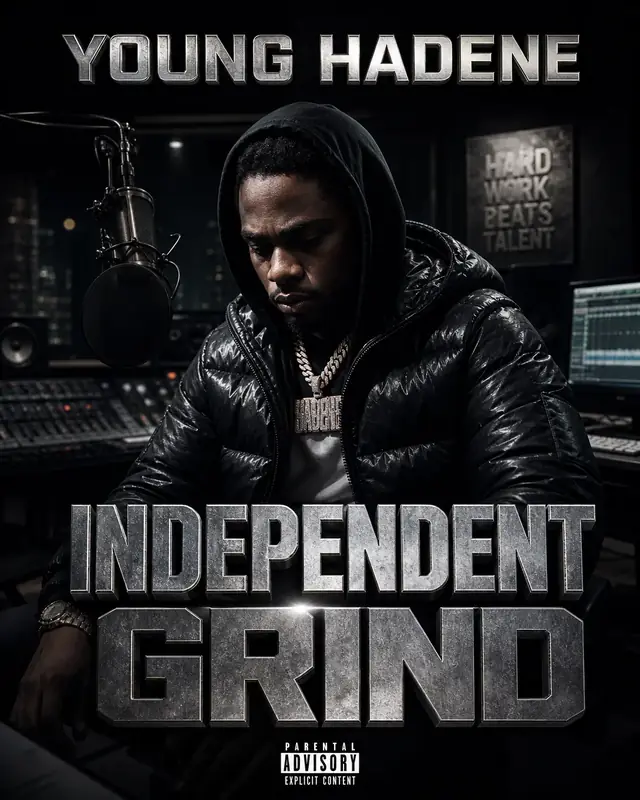
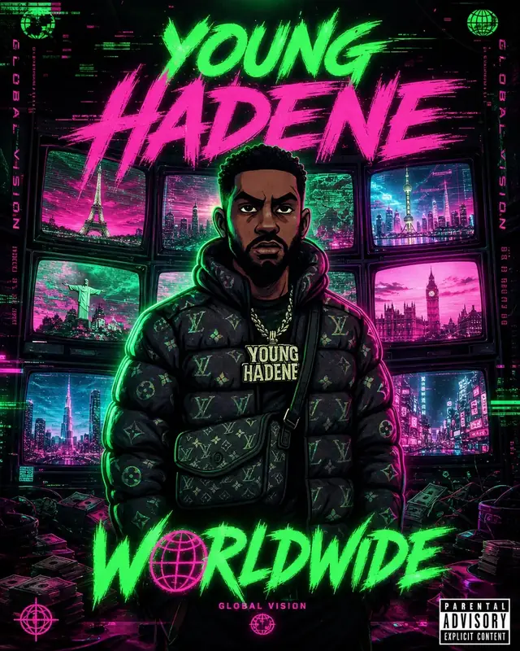

Heavy cuts from the vault.
Watch the Young Hadene video playlist.
Haitian-born and Toronto-based, Young Hadene makes drill and dark trap in the 6ix — hard-hitting street narratives with melodic hooks, released independently.
Read the full story — from Haiti to Toronto, the sound, and the independent path behind the music.
Cinematic visuals that define the Young Hadene aesthetic.


What publications are saying — linked to the originals.
An in-depth interview on the album, the Haiti-to-Toronto journey, and building independently.
Read ArticleA Q&A on recording, mastering, and shooting everything himself.
Read ArticleA feature on the Haitian-roots-meets-Toronto sound and the self-made grind.
Read ArticleA short Q&A on his Toronto sound and the message behind the music.
Read ArticleEverything you need to know about the Haitian-Toronto drill and dark trap artist.
Young Hadene is a Haitian-Toronto drill and dark trap artist. Haitian-born and Toronto-based, he blends hard-hitting street narratives with emotional undertones, focusing on loyalty, ambition, struggle, and personal growth.
Born in Haiti, partly raised in Florida, and now based in Toronto, Young Hadene brings both worlds into his music. His sound fuses Haitian influences with the raw energy of Toronto's drill and trap scene, creating a unique voice in Canadian hip hop.
Dark trap and drill-influenced hip hop with structured cadence shifts, space-driven delivery, aggressive energy, and melodic hooks. He represents the modern Toronto rap wave combining drill rhythm, trap intensity, and melodic storytelling.
Young Hadene's Haitian-Toronto perspective sets him apart. He blends Caribbean and Haitian influences with dark trap production, creating a sound that bridges the 6ix underground with his heritage. His structured cadence shifts and space-driven delivery create a distinct balance between aggression and melody.
Young Hadene draws from Toronto's rich hip hop lineage — from K-OS and Jazz Cartier to Sean Leon and 88GLAM — while incorporating Haitian musical elements and the heavy 808-driven sound of drill and trap. His sound is built on the artists who defined the 2005-2018 Toronto scene.
Yes, Young Hadene is an independent artist operating out of Toronto, Ontario. He manages his own releases, visual branding, and distribution across Spotify, Apple Music, YouTube, and all major streaming platforms.
The Haitian-Toronto drill sound — where heritage meets the 6ix.
Young Hadene is a Haitian drill rapper from Toronto. Haitian-born and raised in the 6ix, he represents the intersection of Caribbean heritage and Toronto's hard-hitting drill and trap scene.
Young Hadene is one of the Toronto drill artists blending Caribbean and Haitian influences with dark trap production. His music fuses Haitian rhythmic elements with the heavy 808 sound of Toronto drill — hear the details in this breakdown of the sound.
The Haitian-Toronto drill sound is a fusion of dark trap production, drill rhythm patterns, and Haitian musical influences. Young Hadene works in this blend — combining heavy 808s, cinematic atmospheres, and melodic hooks rooted in his heritage. Read more in Haitian-Canadian music and Toronto drill.
Young Hadene represents the real 6ix in dark trap and drill. From the underground venues of Toronto to the global streaming platforms, his music carries the authentic energy of Toronto's nightlife and street culture.
What Young Hadene stands for — the vision behind the music.
The Young Hadene movement is about authenticity, Haitian-Toronto representation, and dark trap innovation. It's built on real stories from the 6ix, consistent releases, and a commitment to pushing Toronto drill forward without compromising the sound.
'Built Different' represents Young Hadene's unique approach to music — a Haitian-Toronto perspective you won't find anywhere else. 'Dark Trap' defines the cinematic, heavy 808 sound. '6ix Side' is a tribute to Toronto, the city that shaped the artist.
Young Hadene is an artist to watch in 2026 because of his consistent output, unique Haitian-Toronto sound, growing streaming numbers, and strong visual branding. He represents the new wave of Canadian hip hop blending drill, trap, and Caribbean influences.
Young Hadene's music covers loyalty, ambition, struggle, personal growth, Toronto street life, and the journey from Haiti to the 6ix. His lyrics blend hard-hitting street narratives with emotional undertones and melodic storytelling.
That depends on the criteria — commercial success, lyricism, or underground impact all give different answers. This site's 2026 Toronto rap roundup lays out its selection approach openly, including the disclosure that the site is associated with Young Hadene. Compare the music there and decide for yourself.
He is part of the country's independent wave — a Toronto-based artist releasing drill and dark trap on his own terms, alongside both mainstream names and underground peers across Canada. Start with the music page to hear where he fits.
Follow, get updates & leave a review — help the 6ix movement show up first when people search.